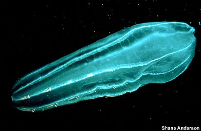
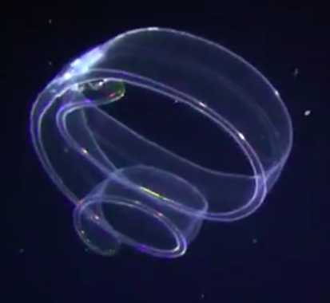
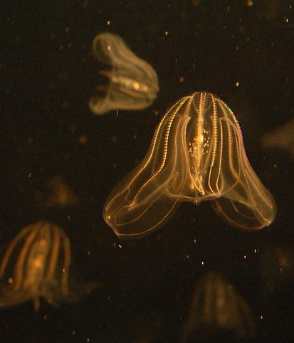

Рассмотрим некоторых представителей этой категории.
Берое (гребневик).
Длина тела до 16 см. Оно полупрозрачное, мешковидной формы. Ротовое отверстие на заднем конце. Он слегка уплощён, а передний закруглен. Вдоль тела 8 рядов гребных пластинок, переливающихся всеми цветами радуги, под которыми можно разглядеть вытянутые в длину половые железы. Окраска розовато-жёлтая, половые железы темнее, могут быть даже фиолетовыми. Между рядами гребных пластинок видна сеточка каналов кишечной полости.

Венерин пояс.
Самый крупный вид гребневиков, может достигать в длину до 2,5 м. Взрослые гребневики обладают прозрачным студенистым телом лентовидной формы, сильно вытянутым в ширину и уплощенным с боков. Восемь рядов гребных пластинок переливаются всеми цветами радуги, а при движении по всему телу гребневика пробегают фиолетовые переливы, благодаря чему венерин пояс и получил такое поэтическое название. Представители этого вида ведут пелагический образ жизни, плавая за счёт змеевидных извивающихся движений лентовидного тела, которые обеспечиваются попеременным сокращением мышечных лент, расположенных вдоль плоских сторон тела. Главная ось тела, проходящая между ртом и аборальным органом, всегда располагается вертикально благодаря работе рядов гребных пластинок и извивающиеся движения, таким образом, всегда производятся в горизонтальной плоскости. Обитает в тропических и субтропических водах морей и океанов по всему миру, включая Средиземное море. Питаются эти гребневики планктонными ракообразными, которых ловят и передают ко рту многочисленными усиками, окаймляющими слизистый желобок, проходящий по нижнему ребру лентовидного тела. Закладывающиеся как боковые отростки щупалец, эти усики со временем вылезают из щупальцевых карманов, расположенных посредине плоских сторон тела, и перемещаются на желобок. В темноте проявляется способность венериного пояса к свечению.

Mnemiopsis leidyi.
Вид гребневиков, обитающий в морской воде в тёплых краях и напоминающий медузу, хотя передвигается при помощи гребных пластин, расположенных по бокам. Хищник, питается зоопланктоном, а также икринками и личинками рыб и моллюсков. На свету переливается яркими цветами.
